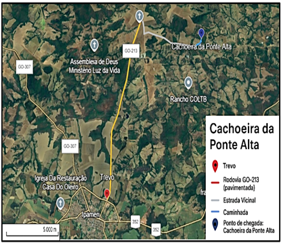
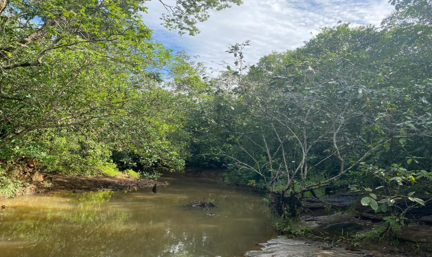
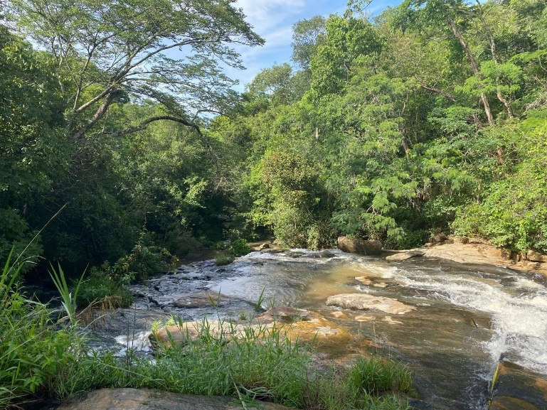
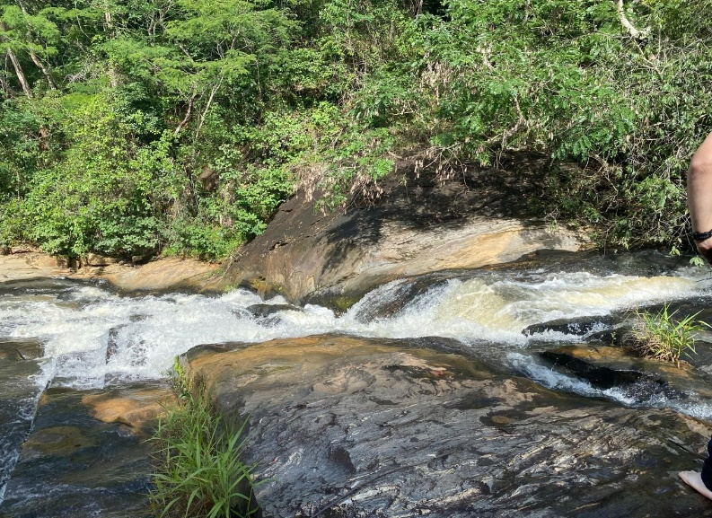
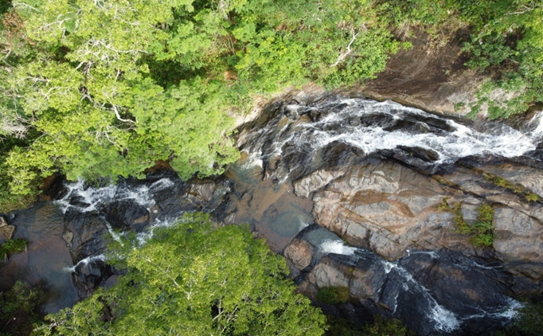
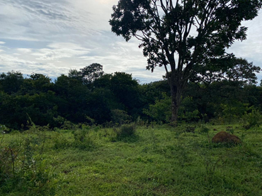
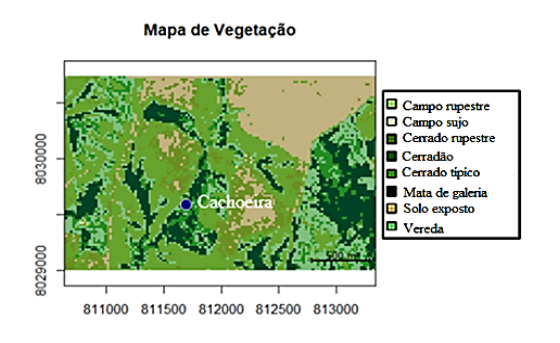
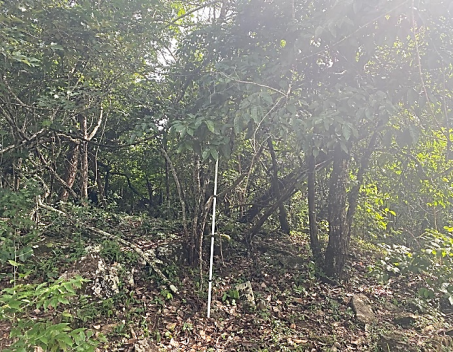

Cachoeira da Ponte Alta
A Trilha da Cachoeira da Ponte Alta é um atrativo encantador do município de Ipameri-GO, destacando-se por unir beleza cênica, biodiversidade e acessibilidade. Com aproximadamente 1 km de extensão e tempo médio de caminhada estimado em 15 minutos, a trilha oferece acesso à cachoeira, situada a cerca de 18 km do centro da cidade, em uma área de rica diversidade ecológica no bioma Cerrado.
O percurso é considerado de nível fácil a moderado, com um ganho de elevação de cerca de 50 metros acima do mar, e pode ser percorrido por visitantes com diferentes níveis de preparo físico.
Atenção e Recomendações
- Mostra-se também propício para o desenvolvimento de atividades ecopedagógicas, permitindo a condução de turmas de até 35 alunos, desde que acompanhadas por responsáveis, favorecendo práticas educativas em contato direto com o ambiente natural.
- Para maior conforto e segurança durante a atividade, indica-se o uso de trajes leves para trilha, calçados fechados e resistentes, bem como a aplicação de proteção contra a radiação solar e insetos.
- Salienta-se, ainda, a necessidade de conduta consciente quanto à conservação da área, evitando qualquer impacto decorrente do descarte inadequado de resíduos.
- O banho deve ser realizado somente sob a supervisão de um responsável, garantindo a segurança dos visitantes.
A Tabela 1 contém dados sobre as distâncias do percurso completo (aproximadamente 17 km – com saída a partir do Trevo para Campo Alegre de Goiás), de acordo com cada via.
| Tipo de via | Distância |
|---|---|
| Rodovia GO-213 – pavimentada | 11,37 Km |
| Estrada Vicinal - sem pavimentação | 5,34 Km |
| Caminhada | 0,91 Km |
A Figura 1 mostra uma imagem de satélite da região e do trajeto completo da Trilha da Cachoeira da Ponte Alta.

Além de ser utilizada para atividades de lazer, a trilha possui um potencial para ser um local de ecoturismo e educação ambiental, favorecendo experiências sensoriais, práticas fotográficas, caminhadas ecológicas e observação da fauna e da flora locais. A combinação entre facilidade de acesso e riqueza paisagística reforça o potencial da trilha para atividades sustentáveis e de sensibilização ambiental.
O principal atrativo da Cachoeira da Ponte Alta é a integração harmoniosa entre os elementos naturais do Cerrado e os recursos hídricos presentes na região. A cachoeira é formada por águas que escorrem sobre rochas e desaguam em poços, cuja profundidade é variável e exige atenção, rodeados por vegetação preservada.

O destino final, a Cachoeira da Ponte Alta, apresenta uma queda d’água de médio porte, cercada por vegetação ciliar e áreas sombreadas ideais para descanso e contemplação da natureza. O local apresenta pedras escorregadias e correnteza, exigindo atenção redobrada dos visitantes durante a circulação ou aproximação da água.


Figuras 3 e 4. Vistas da Cachoeira da Ponte Alta (dezembro de 2024).

Crédito: Jair de Souza Júnior
A trilha é marcada por um caminho bem delineado entre a vegetação típica do Cerrado, com trechos de solo exposto, afloramentos rochosos e vegetação variada.
A seguir, apresenta-se a Tabela 2. com a variação percentual das fitofisionomias predominantes de 2016 e 2024:
| Ano | Campo rupestre | Campo sujo | Cerrado rupestre | Cerradão | Cerrado típico | Mata de galeria | Solo exposto | Vereda |
|---|---|---|---|---|---|---|---|---|
| 2016 | 0,28% | 0,12% | 26,01% | 11,49% | 25,86% | 8,39% | 14,78% | 13,03% |
| 2024 | 0,05% | 0,10% | 8,79% | 8,54% | 31,26% | 16,75% | 18,28% | 16,20% |
A vegetação da Trilha da Cachoeira da Ponte Alta é composta por um mosaico diversificado de fitofisionomias do bioma Cerrado, evidenciando a complexidade ecológica da área, evidenciando o Cerrado típico e o Cerrado rupestre como vegetações predominantes.


A figura 8 apresenta o mapa de cobertura vegetal da área referente à Trilha da Cachoeira da Ponte Alta, para 2024.

Interpretação das Mudanças na Vegetação (2016–2024)
O Cerrado típico aparece como a formação dominante em quase todos os anos analisados, caracterizado por árvores tortuosas, gramíneas abundantes e arbustos espaçados, apresentando poucas mudanças ao longo de quase uma década. O Cerrado rupestre destaca-se nos trechos com solos mais rasos e pedregosos, favorecendo espécies adaptadas a essas condições edáficas. Segundo as análises, houve mudanças significativas ao longo dos anos, com uma redução de 17,22%.
As áreas de Campo sujo, Campo rupestre, Cerradão, Mata de galeria e Vereda aparecem em proporções variáveis ao longo dos anos, mas são importantes para a diversidade do sistema. As zonas de solo exposto, que mantêm percentuais relativamente altos, refletem os desafios de conservação e também a vulnerabilidade do solo à erosão.
No decorrer das análises algumas discrepâncias e variações nas fitofisionomias foram observadas, as quais podem ser atribuídas às limitações do modelo empregado na classificação da vegetação, que nem sempre é completamente exato.